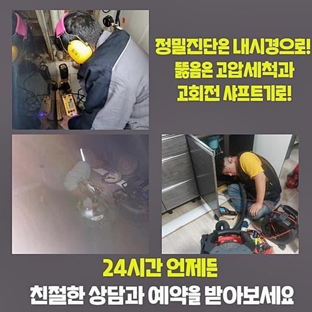
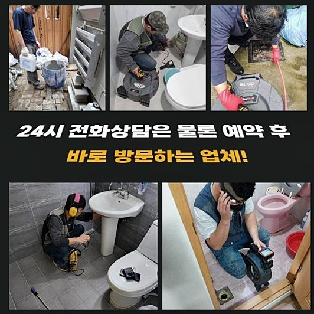
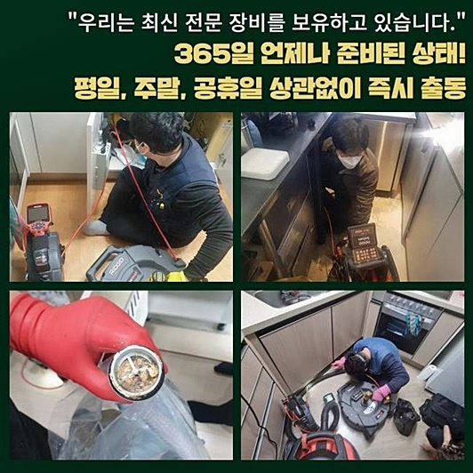
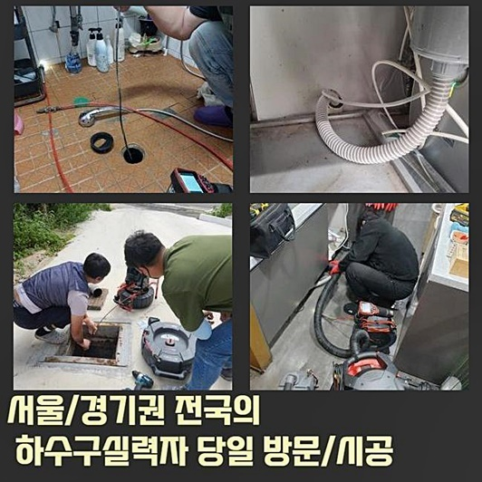
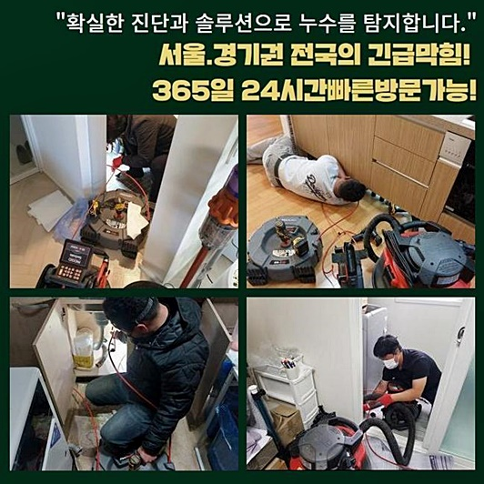
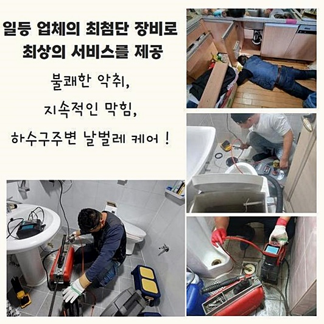

🏠 중구 황학동세탁실역류 태평로 하수구뚫어주는업체 누수탐지
용인 싱크대막힘 전문 시공 후기

📋 작업 개요
- 위치: 용인
- 서비스 유형: 싱크대막힘, 하수구막힘, 배관막힘, 누수수리, 역류해결, 뚫는업체, 배관청소, 고압세척, 설비공사
- 작업 일시: 2024. 8. 7. 22:28
- 업체명: 하수구수사대 (010-5615-2118)
🔍 문제 상황
중구 황학동세탁실역류 태평로 하수구뚫어주는업체 누수탐지
물막힘이 생기는 까닭은 여러가지예요
물티슈나 플라스틱 조각에 의해 일어날 수도 있고 기름찌꺼기가 하수관 전반에 적체되고 장시간이 지나가서 단단하게 경화돼는 현장도 예상외로 많답니다
금일에는 배관문제가 일어난 곳을 소개하는 시간을 갖겠습니다
여기는 개수대 막힘이 빈번하게 발발하여서 방문을 청하신 상황이었어요
싱크대 물이 시원하게 안 빠지면 마트에서 구매가능한 클리너제품이나 더운물을 부어보는 일 내지 나뭇가지와 같은 걸 활용하여 잔재들을 없애는 계획을 가지신 분이 꽤 있으신 걸로 조사되는데요
사소한 트러블이라면 해소할 가능성도 있지만 다면적인 원인에 의해 이러한 일이 일어났다면 독립적으로 고쳐내기는 난망합니다
요번에 들어갔던 지점은 주방의 하단부에서 유난히 수분이 빈번히 유출되고 하수관쪽에서 통수가 되지 않아서 물넘침이 나타나는 광경이 나타났답니다
주방공간은 거름장치가 붙어있어 설거지 과정에서 방출되는 잔재를 일차로 분리하고 잔여물이 하수구로 방출되도록 조치하신 것을 볼 수 있었어요
그럼에도 가는 노폐물이나 유분이 함유된 불순물 같은 것들은 여과되지 않은 상태로 하수관에 들어가게 됩니다
이런 불순물이 조금씩 관로에 적체된다면 안에서 오수가 빠져나갈 수 있는 영역이 지속적으로 좁아지면서 물막힘 문제가 나타나죠
전반적인 문제점을 파악하고자 내시경설비를 내측으로 투입하고 본질적인 문제점을 파악하기로 결단하였답니다
주방쪽 배수관은 아랫부분에 자리잡은 장의 밑부분으로 직결된 모습이었죠

🔎 원인 분석
💡 전문가 진단: 정밀 진단 장비를 사용하여 슬러지의 고착 여부를 판명하고 타격/세척 작업을 실시했습니다.
그러므로 이곳의 트러블을 수리해내려면 하부장쪽의 공간을 뚫어서 진단해야 해요
해당 처소처럼 관로로 연결된 바닥부위에 근접하기 용이하다면 구태여 설비 절단까진 생략가능합니다
그렇지만 전체적인 구조 상 일상적인 수리가 여의찮은 모습으로 이뤄진 주방공간은 타공이 불가결할 때도 있답니다
해당하는 시공은 출장을 간 다음 세밀하게 모양을 진단하고 속행하는 것을 원칙으로 삼으며 이러한 것들은 수선 이전 의뢰인에게 승낙을 구하고 실행합니다
내시경cctv를 통해 들여다 본 파이프의 내측에는 많은 슬러지가 누증된 상황이었습니다
기름때와 슬러지가 결합하여 시원스럽게 수돗물이 배출되지 못한 거였죠
보편적으로 유분은 수돗물과 복합되지 않기 때문에 파이프에 유분이 넘어가면 신속하게 사라지는 것이 아닌 배수관의 사이사이에 적체되기 쉽답니다
거기에 더해 다른 이물까지 진입하면 배수관 벽에 강력히 달라붙어 버려서 더욱 소멸시키기 어려워요
아파트에 사시는 분들은 해당되는 문제를 타파하기 위하여 수돗물을 데워서 통수를 꾀하셨으리라 사료되는데요
그렇지만 끓인 물성분은 반대로 배수관에 부정적인 기운을 보내기도 해요
통상적으로 주거공간에 시설하는 파이프는 대개 플라스틱 계열인데 이것은 높은 온도에 저항이 높지 않아요
그렇기 때문에 온수를 넣으시면 하수관이 변형되기 쉽고 절단되거나 훼손되기도 합니다
따라서 더운물이 아니라 구조적인 변화를 꾀하여 조속히 찌꺼기를 소멸시키는 게 해당 사안을 풀어내는 열쇠라고 말씀드릴 수 있어요

🔧 작업 과정
배수관 정체현상을 안전하게 고쳐낼 수 있는 공구는 고속 샤프트설비입니다
이건 내부의 찌꺼기들을 갈아내는 목적을 가지고 있으며 얇고 강한 노즐과 강력한 체인으로 형성됐고 작업자가 타깃을 확보하고 헤드를 작동시키면 머리부분이 하수관의 이물들을 떼어줍니다
배수관에는 별다르게 고장을 유발하지 않는 기계이지만 어떤 사람이 다루는지에 의하여 간헐적으로 장애가 생길 수도 있답니다
그렇기 때문에 저희측에서도 신중한 자세로 신뢰성있게 시공을 담당합니다
장기간 쌓인 찌꺼기들은 10회 미만의 스케일링으론 소멸시키기엔 역경이 큽니다
이 때문에 반복적인 시공에 의존해서 시행되어야 마땅합니다
답답한 막힘을 일으켰던 기름슬러지들을 플렉스샤프트로 안전하게 소제하면 점진적으로 마무리단계로 진입할 수 있습니다
이후 배관카메라를 집어 넣어 부속들의 상태를 진단해 줍니다
딱딱한 물체로 가득하였던 파이프가 청결해졌다는 걸 감상하실 수 있어요
미량의 고형물이라고 해도 관에 잔류한다면 몇 주 지난 뒤에 또다시 배관막힘이 발발하는데요
물을 사용하면서 진입하게되는 것들과 손쉽게 섞이고 뭉치게 되고 이건 즉각 물흐름을 막게 되는거죠
그렇기 때문에 처음 소쇄할 시 미량의 슬러지라도 존재하지 않게 집중하여 세척하는 게 좋습니다
반복하여 소쇄를 이행하면 드디어 배수관이 뚫리게 되는데요
물막힘과 역류 등을 유발하던 침전물이 깨끗이 소멸되는 것을 직시하였고 이 모습을 의뢰인에게도 보게해 드렸네요
고객님도 내부의 모습을 세밀하게 검수하셨으며 통수 시공의 처음부터 끝을 직관할 수가 있었습니다
저희는 전 프로세스를 신뢰감있게 오픈해 드리므로 마음 편안한 서비스를 받으실 수가 있는 것입니다
해당현장의 배관트러블을 완료한 뒤엔 물빠짐 속도 평가를 행하여야 합니다
수리 성과를 검토하기 위하여 배수공의 덮개를 덮은 채로 수돗물을 20리터 이상 채워 단방에 붓는다면 관로의 청소 성과를 파악할 수 있습니다
탁수가 소멸되기는커녕 그 상황이 심화되었었는데 플렉스샤프트를 사용하여 용이하게 마무리지을 수 있었네요
신속 정확한 시공을 이행하려면 올바르게 시공해내는 전문인의 내방이 필수예요


✅ 작업 완료
수준높은 실력을 기초로 신망이 두터운 배관 공사 전문가의 조력을 얻어서 분명하게 처리할 수 있죠
뚫음을 빈틈없이 완수하고 현장 근방의 세척도 이행한 뒤 하수관 시공 현장을 끝마쳤어요
기기를 가동하면서 근방에 침전물 등이 날아다니기도 하고 인체 유해 물질이 남아있는 경우도 있으므로 이에 대한 청소도 반드시 시공 후에 진행합니다
이번 하수관 시공 현장처럼 건물 내부에서 처리하기 수월한 경우라면 괜찮겠지만 침전물이 하수관에 전반적으로 들어차 있는 경우엔 고압 물세정 작업이 추가될 수 있답니다
세부적인 안내는 공사 뒤 진단을 통해서 정확하게 말씀해 드리니 방문 내방을 청하기를 바라요
하수도 뚫음과 관련된 의뢰하실 사안이 존재한다면 빨간날이라도 말씀해 주셔도 무방합니다



⚠️ 베란다 누수 및 방수 관리 방법
- ✅ 비가 많이 올 때 창틀 주변이나 아래층 천장에 얼룩이 생기는지 정기적으로 확인해 보세요.
- ✅ 우수관 주변 실리콘 마감이 들뜨거나 깨진 틈새가 있는지 손상 여부를 수시로 체크하세요.
- ✅ 베란다 바닥 타일의 줄눈(메지)이 소실되면 그 틈으로 물이 침투하여 누수가 유발됩니다.
- ✅ 누수 의심 증상 발견 시 방치하면 아래층 손실이 커지므로 즉시 전문가의 진단을 받으십시오.
💡 핵심 정리
- 확실한 장비 작업(내시경 점검 및 샤프트 스케일링)으로 원인을 뿌리 뽑습니다.
- 작업 후 1년 이내에 동일한 부위 재발 시 100% 무상 A/S 서비스를 보장합니다.
- 서울 · 경기 · 인천 전 지역에 24시간 언제든 긴급 출동할 수 있도록 항시 대기 중입니다.
❓ 자주 묻는 질문 (FAQ)
🚨 용인 싱크대막힘 문제로 고민이신가요?
정확한 원인 진단과 확실한 시공으로 재발 없는 해결을 약속드립니다.
24시간 긴급 출동 | 서울 · 경기 · 인천 전지역 | 1년 내 재발 시 무상 A/S